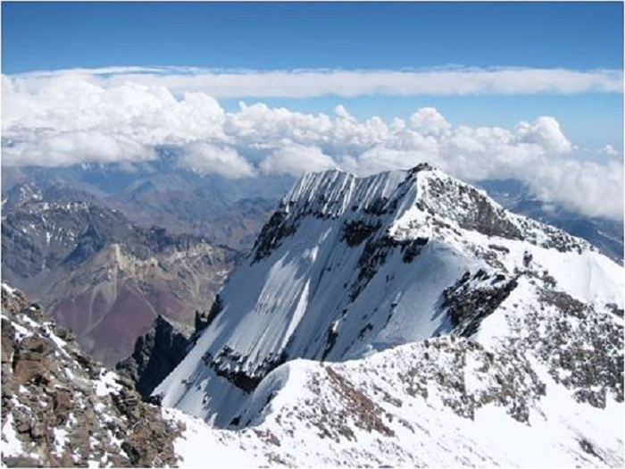
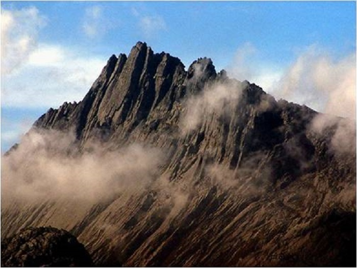

南美洲-阿空加瓜山

阿空加瓜山位于阿根廷门多萨省西北端，临近智利边界，山峰坐落在安第斯山脉北部，与迪纳利，乞力马扎罗一样都是死火山。这座山有四最：南美洲最高，美洲最高，世界最高死火山，全世界除了亚洲之外的最高山峰。“阿空加瓜”在瓦皮族语中是“巨人瞭望台”的意思，由此可见它的高度，正所谓登高望远。
阿空加瓜的峰顶较为平坦，主要由火山岩构成，山形呈圆锥形，山顶有凹下的火山口。由于纬度高，阿空加瓜山的气候已接近极地气候。不要听到极地气候就害怕啊，比起其他高峰，这座山相对是容易攀爬的，虽然海拔高，但是不需要氧气瓶依然可以登顶。据公园管理处统计，每年有3000人攀登阿空加瓜山，70%的人能够登顶。历史上最快的登顶时间仅仅只有5小时45分。
大洋洲-查亚峰

查亚峰（Puncak Jaya）“Puncak”意为山峰，“Jaya”则是胜利的意思。它是印尼、新几内亚、大洋洲以及马来群岛最高峰，是喜马拉雅山及安地斯山之间的最高点。这座山峰也有几个常用的名字： 苏卡诺峰，这是印尼在1960年代统治新几内亚后，为了纪念首任总统苏卡诺而使用的； 卡兹登兹峰（Mount Carstensz） 或卡兹登兹金字塔 （Carstensz Pyramid）， 这是得名于荷兰探险家卡兹登兹（Jan Carstensz），他在1623年的某一天首次观测到查亚峰上的冰河。
查亚峰是七大顶峰里海拔最低，但不能小看它。它被称为最蛮荒最神秘的一座山，为何神秘？因为它位于全世界第二大岛-新几内亚岛上，这里拥有全世界最原始的热带雨林之一，保留着最多元化的物种，而住在这里的原住民部落在1960年才被发现。
在七大顶峰中，查亚峰虽然不是最困难的山峰，但被列为最高技术等级。标准攀登路线是从查亚峰的北侧，沿着山脊登顶，但是这条路线全都是坚硬岩石，因此登山者必须具备熟练的攀岩技术。